N-D Test Functions C¶
N-D Test Functions C¶CarromTable test objective function.
This class defines the CarromTable global optimization problem. This is a multimodal minimization problem defined as follows:
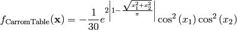
Here,  represents the number of dimensions and
represents the number of dimensions and ![x_i \in [-10, 10]](_images/math/d511ca3206c16bae3e3af3c02835f3fe9fb07286.png) for
for  .
.
Two-dimensional CarromTable function
Global optimum: 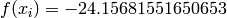 for 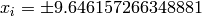 for 
Chichinadze test objective function.
This class defines the Chichinadze global optimization problem. This is a multimodal minimization problem defined as follows:
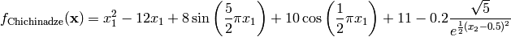
Here, represents the number of dimensions and 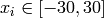 for .
Two-dimensional Chichinadze function
Global optimum: 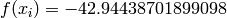 for 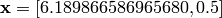
Cigar test objective function.
This class defines the Cigar global optimization problem. This is a multimodal minimization problem defined as follows:
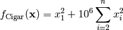
Here, represents the number of dimensions and ![x_i \in [-100, 100]](_images/math/33bdb423b6ec61d9668e76b556c95c96b2bb72ef.png) for .
for .
Two-dimensional Cigar function
Global optimum:  for
for  for
for
Cola test objective function.
This class defines the Cola global optimization problem. The 17-dimensional function computes indirectly the formula 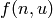 by setting 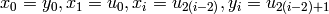 :
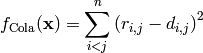
Where 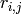 is given by:
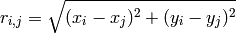
And  is a symmetric matrix given by:
is a symmetric matrix given by:
![\mathbf{d} = \left [ d_{ij} \right ] = \begin{pmatrix}
1.27 & & & & & & & & \\
1.69 & 1.43 & & & & & & & \\
2.04 & 2.35 & 2.43 & & & & & & \\
3.09 & 3.18 & 3.26 & 2.85 & & & & & \\
3.20 & 3.22 & 3.27 & 2.88 & 1.55 & & & & \\
2.86 & 2.56 & 2.58 & 2.59 & 3.12 & 3.06 & & & \\
3.17 & 3.18 & 3.18 & 3.12 & 1.31 & 1.64 & 3.00 & \\
3.21 & 3.18 & 3.18 & 3.17 & 1.70 & 1.36 & 2.95 & 1.32 & \\
2.38 & 2.31 & 2.42 & 1.94 & 2.85 & 2.81 & 2.56 & 2.91 & 2.97
\end{pmatrix}](_images/math/ff0c1fb88112b9fb6d119f6999d2add82f8ae22b.png)
This function has bounds 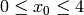 and 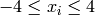 for 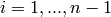. It has a global minimum of 11.7464.
Colville test objective function.
This class defines the Colville global optimization problem. This is a multimodal minimization problem defined as follows:
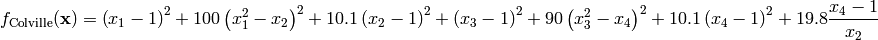
Here, represents the number of dimensions and for  .
.
Global optimum: for  for
for
Corana test objective function.
This class defines the Corana global optimization problem. This is a multimodal minimization problem defined as follows:
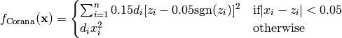
Where, in this exercise:
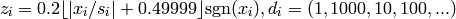
Here, represents the number of dimensions and ![x_i \in [-5, 5]](_images/math/b7a53fa3c9c2f313c2a86c222fdfbbeaf4b5a3ed.png) for .
for .
Global optimum: for for
Cosine Mixture test objective function.
This class defines the Cosine Mixture global optimization problem. This is a multimodal minimization problem defined as follows:
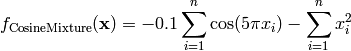
Here, represents the number of dimensions and ![x_i \in [-1, 1]](_images/math/69d20098894c45659a72bd07f85a904ff6726b1e.png) for 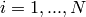.
for 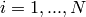.
Two-dimensional Cosine Mixture function
Global optimum: 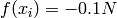 for for
Cross-in-Tray test objective function.
This class defines the Cross-in-Tray global optimization problem. This is a multimodal minimization problem defined as follows:
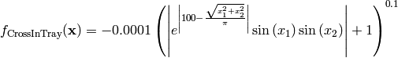
Here, represents the number of dimensions and 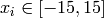 for .
Two-dimensional Cross-in-Tray function
Global optimum: 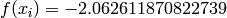 for 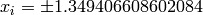 for
Cross-Leg-Table test objective function.
This class defines the Cross-Leg-Table global optimization problem. This is a multimodal minimization problem defined as follows:
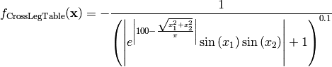
Here, represents the number of dimensions and for .
Two-dimensional Cross-Leg-Table function
Global optimum:  . The global minimum is found on the planes 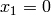 and 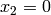
. The global minimum is found on the planes 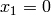 and 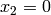
Crowned Cross test objective function.
This class defines the Crowned Cross global optimization problem. This is a multimodal minimization problem defined as follows:
Here, represents the number of dimensions and for .
Two-dimensional Crowned Cross function
Global optimum: 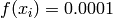. The global minimum is found on the planes and
Csendes test objective function.
This class defines the Csendes global optimization problem. This is a multimodal minimization problem defined as follows:
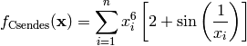
Here, represents the number of dimensions and for .
Two-dimensional Csendes function
Global optimum: 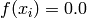 for for
Cube test objective function.
This class defines the Cube global optimization problem. This is a multimodal minimization problem defined as follows:
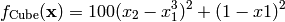
Here, represents the number of dimensions and for .
Two-dimensional Cube function
Global optimum: for 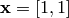